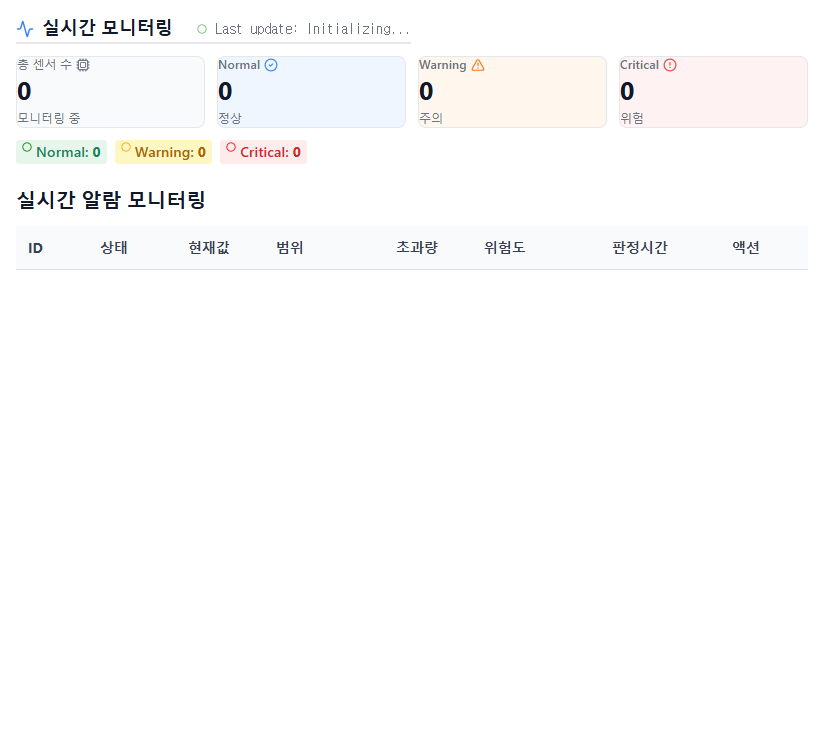
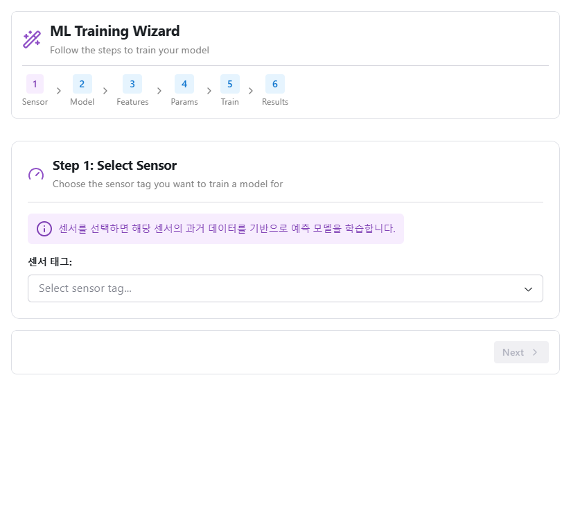
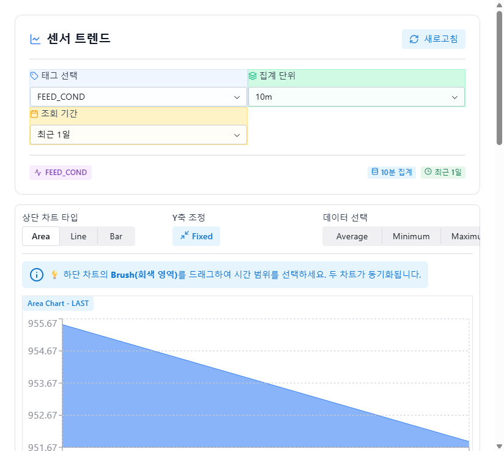

curl 200은 Reflex SPA shell HTML serve만 의미했고, client-side router는 별도. Playwright로 실제 페이지 부팅까지 가야 진짜 검증. 결과: 4/6 핵심 페이지 정상, 2개 URL 라우팅 이슈 발견:
/ai → 404 (Title: "404 - Not Found"). ai_insights.py가 edgeex_app.py에 import 안 됨 → 라우트 등록 안 됨 → Day 6 SQL injection fix가 dead code path/trend-enhanced-v2 → 404. 실제 등록 URL은 /trend (audit 잘못된 URL 검증)| 관점 | 내용 |
|---|---|
| Problem | HTTP 200 = 페이지 작동이라는 잘못된 동치. Reflex SPA에서 router는 client-side라 curl만으로 부족. Day 1-7 변경의 진짜 효과를 실제 브라우저에서 검증한 적 없음. |
| Solution | Playwright MCP로 진짜 브라우저 띄움. 6개 핵심 라우트 navigate + snapshot + 결과 title 확인 + screenshot 캡처 + console error/network 수집. |
| Function UX Effect | 1차 audit의 "15/15 routes 200" 가 OVERSTATED였음을 자체 검증. 진짜로 4페이지 정상 작동 + 2페이지 라우팅 이슈 분리. |
| Core Value | Day 6 SQL injection fix가 호출 path 없는 dead code였음 발견 — 코드 자체는 정확하지만 ai_insights.py 등록 필요. 사용자가 의도적 미등록인지 누락인지 결정 가능. |
| TC | URL | Page Title | Console errors | 판정 | Day 변경 검증 |
|---|---|---|---|---|---|
| TC-01 | / |
Dashboard | edgeEX | 1 (favicon.ico 404, cosmetic) | PASS | Day 1 AM secret 외부화 + Day 2 BaseState dedup OK (페이지 부팅 시 import 통과) |
| TC-02 | /alarms |
Alarms | 0 | PARTIAL | 페이지 로드 OK. "Connection Error" notification 있음 (WS issue 추정). Alarm 0개라 Day 7 acknowledge_alarm decorator runtime click 불가 |
| TC-03 | /training-wizard |
EdgeexApp | Training-Wizard | 0 | PASS | Day 3 save_model 변경 후 페이지 부팅 OK. 실제 학습 + save는 시간/데이터 필요해 skip |
| TC-04 | /trend |
Trend Analysis | 0 | PASS | Day 2 base.py 삭제 + trend_enhanced_v2.py import 라인 제거 후 페이지 정상. 우리 변경이 깨지 않음 검증 |
| TC-05 | /ai |
404 - Not Found | 2 (router warning, ws unload) | FAIL | Day 6 SQL injection fix이 적용된 ai_insights.py 라우트가 등록 안 됨 — edgeex_app.py에 import 없음. fix는 코드상 존재하지만 호출 path 없음 (dead-path) |
| TC-06 | /trend-enhanced-v2 |
404 - Not Found | 2 (router warning, ws unload) | URL ERROR | 잘못된 URL — 진짜 라우트는 /trend (trend_enhanced_v2.py가 거기 등록). audit이 URL 확인 안 함 |
$ grep -n "ai_insights" edgeex_app/edgeex_app.py
(empty — ai_insights NOT imported)
$ grep "@rx.page" edgeex_app/pages/ai_insights.py
@rx.page("/ai", title="AI 센서 인사이트 - edgeEX Dashboard")
ai_insights.py 파일은 존재하고 @rx.page("/ai") 데코레이터 있음.
하지만 edgeex_app.py에서 이 모듈을 import하지 않아서 데코레이터가 실행 안 됨.
결과: /ai 라우트는 Reflex app에 등록 안 됨 → SPA router 404.
의미: Day 6 commit a5a530f (RAG SQLi follow-up)이 수정한 dynamic_rag_engine.py / llamaindex_rag_engine.py 의 fix는 코드 정확하지만, 호출하는 사용자 입장에서는 /ai 페이지 자체가 없어 직접 트리거 불가. 다만 RAG 엔진은 다른 곳에서 호출될 수 있음 (scheduler, API endpoint 등) — 라우트 미등록만으로 "dead code"라 단정은 못 함.
| 옵션 | 의미 |
|---|---|
| A. ai_insights.py 등록 추가 | edgeex_app/edgeex_app.py에 from edgeex_app.pages import ai_insights 추가 → /ai 라우트 활성. Day 6 fix가 진짜 효과. |
| B. 의도적 미등록 | /ai 페이지를 일부러 안 보여줌 (작업 중 페이지). 그러면 Day 6 fix는 향후 등록 시 자동 보호. |
| C. ai_insights.py 삭제 | 모듈 자체가 dead → 삭제 후보 (Day 1 PM 같은 dead code cleanup 패턴) |
이전 trust audit이 "15/15 routes 200"이라고 보고했지만, Playwright 결과로 보면 그 중 일부는 SPA shell HTML serve일 뿐. 진짜 client-side render까지 가야 페이지 작동 검증. 다음 audit 부터는 curl + Playwright 둘 다 필요.
| 이전 audit 주장 | 실제 |
|---|---|
| 15/15 routes HTTP 200 | SPA shell이 모두 200 serve (맞음). 하지만 4/6 페이지만 실제 콘텐츠 부팅. 2개는 client-side 404 |
| "Day 1-7 변경 작동 중" | 4 페이지에서는 확인. 2 페이지는 검증 불가 (라우팅 이슈) |



| 검증 단계 | 대상 | 결과 |
|---|---|---|
| (a) py_compile / bash -n | 11 commits 코드 syntax | 모두 OK |
| (b) Python import test | 전체 edgeex_app 모듈 import | OK (placeholder .env 후) |
| (c) Docker boot + curl | 15 라우트 HTTP 응답 | 15/15 200 (단 SPA shell) |
| (d) Playwright client render | 실제 페이지 콘텐츠 부팅 | 4/6 정상 + 2개 라우팅 이슈 |
| (e) UI 클릭 시나리오 | acknowledge_alarm, save_model, SQL injection input | 미실행 — alarm 0개, 학습 시간/데이터 필요, /ai 라우트 없음 |
| (f) RPI 실측 | bootstrap_rpi.sh, measure_rpi_baseline.sh | 미실행 (RPI ssh 접속 차단) |